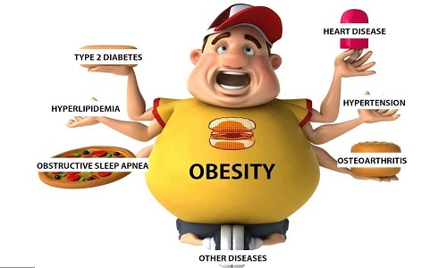
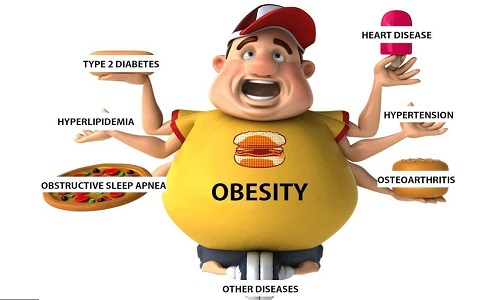
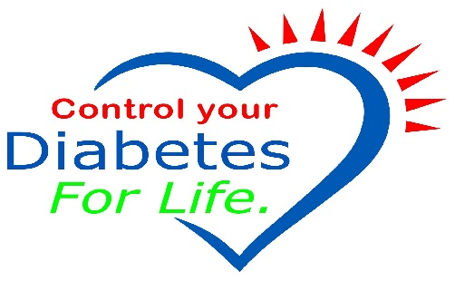
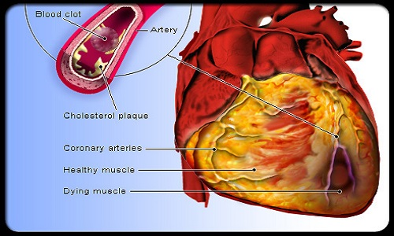
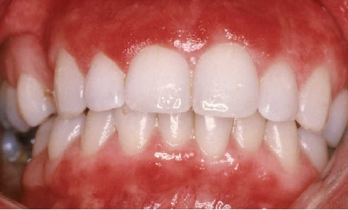

Obesity: The imbalance between declining energy expenditure due to physical inactivity
and high energy in the diet (excess calories whether from sugar, starches or fat) is
the main determinant of the obesity epidemic. Increasing physical activity, plus reducing
intakes of foods high in fat and foods and drinks high in sugars, can prevent unhealthy weight gain.
Taking these simple goals to concrete action requires major social and environmental changes in order
to effectively promote and support healthier choices at the individual level.

Diabetes: excess weight gain, overweight and obesity and physical inactivity account for the escalating rates of type 2 diabetes, worldwide. Diabetes leads to increased risk of heart disease, kidney disease, stroke and infections. Increased physical ativity and maintaining a healthy weight play critical roles in the prevention and treatment of diabetes.
Prevention from Diabetes
A good way to control calories and help prevent type 2 Diabetes is to drink plenty of water.
Of course, eating a nutrient rich diet, getting plenty of exercise and maintaining a healthy
weight are important components of diabetes prevention, but switching to water can also be very
helpful.

Cardiovascular diseases:cardiovascular diseases, the major killers worldwide, are to a great extent
due to unbalanced diets and physical inactivity. Risk of their main forms, heart disease and stroke, is
reduced by eating less saturated and trans fats, and sufficient amounts of (n-3 and n-6) polyunsaturated fats,
fruits and vegetables and less salt, as well as by physical activity and controlling weight. Reduction of salt
intake helps reduce blood pressure, a major cause of cardiovascular diseases.
- 1. Quitting smoking if you smoke
- 2. Healthy eating
- 3. Exercise
- 4. Managing diabetes if you have diabetes
- 5. Managing blood pressure
- 6. Stress management
Cancer:tobacco is the number one cause of cancer, but dietary factors contribute significantly to some
types of cancer. Maintaining a healthy weight will reduce the risk for cancers of the oesophagus,colorectum, breast,
endometrium and kidney. Limiting alcohol intake will reduce risk for cancers of the mouth, throat, oesophagus, liver
and breast. Ensuring an adequate intake of fruit and vegetables should further reduce risk for oral cavity, oesophagus,
stomach and colorectal cancer.
Prevention from cancer:
Some of the most effective ways to prevent cancer includes the use of whole grains, garlic, berries,
tomatoes, green tea, spinach, turmeric, beans, coffee, ginger, and oregano as well as behavioral changes such
as quitting smoking, exercising regularly, getting regular checkups, and losing weight.
Osteoporosis and bone fractures:fragility fractures are a problem of older people. Adequate intakes of
calcium (500 mg per day or more) and of vitamin D in populations with high osteoporosis rates helps to reduce fracture
risk, so does sun exposure and physical activity to strengthen bones and muscles.

Dental disease: caries is preventable by limiting the frequency and amount of consumption of sugars and by appropriate exposure to fluoride. Erosion of teeth by dietary acids in beverages or other acidic foods may contribute to
tooth destruction.
Prevention from dental deases:
The practice of looking after your gums and teeth and maintaining good oral hygiene to keep them healthy
is known as preventive dentistry. The main aim is to avoid cavities, gum infections, enamel wear, tooth loss
and more. With the advent of years of refined diet, we have become more susceptible to oral diseases and hence maintaining
them has become extremely important. With advancements in dentistry prevention of oral diseases has become easier.